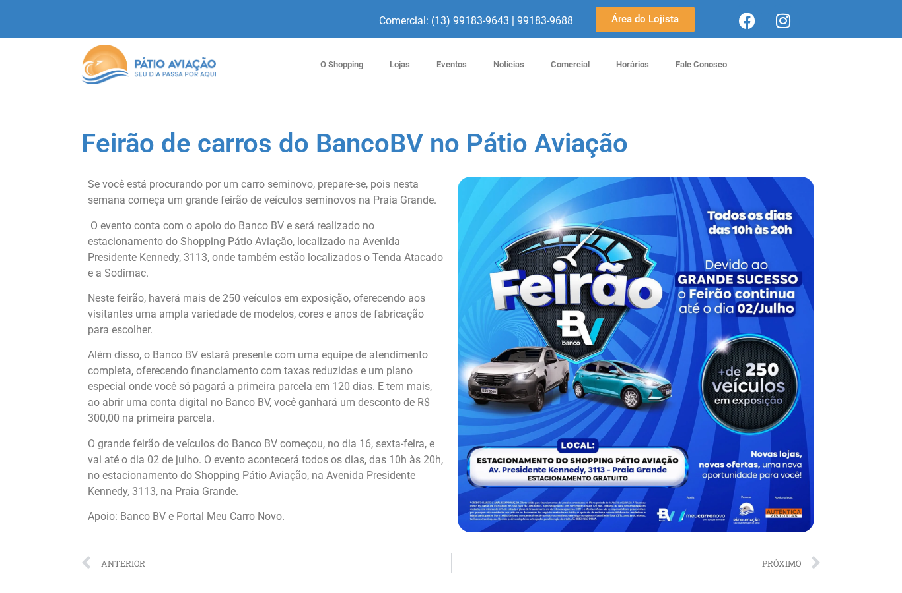
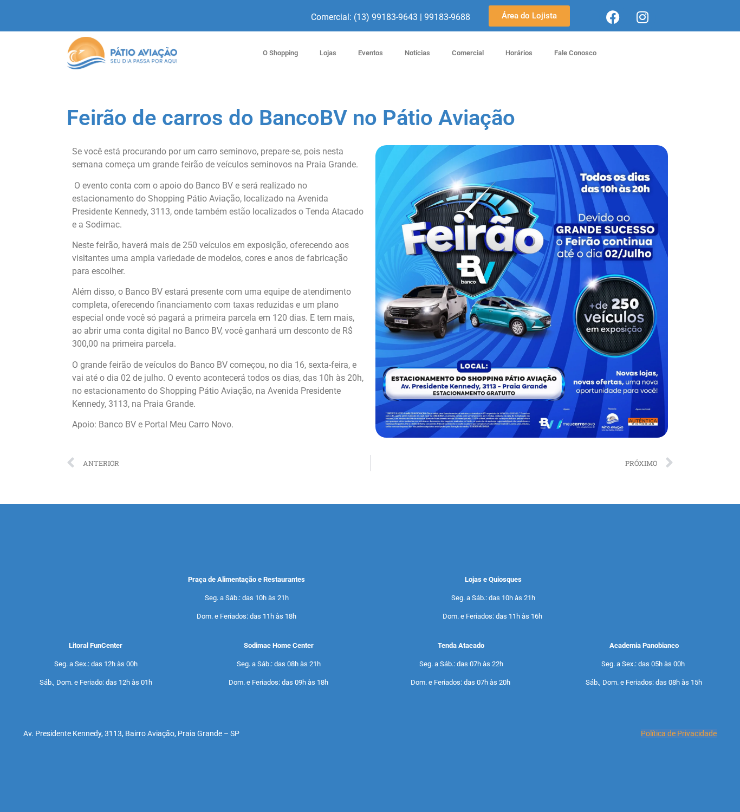

Sistema de Investigação de Marca e Identidade Online
https://patioaviacao.com.br/feirao-de-carros-do-banco-bv-no-patio-aviacao/
Prioridade: MEDIUM · Cenário: B_AMBIGUOUS_COMMUNICATION · Revisão humana: PENDING
O centro comercial Pátio Aviação divulga um feirão automotivo de seminovos associado à marca do Banco BV ('Feirão de carros do BancoBV'). Embora haja menção ao apoio do banco e presença de equipe, a comunicação confunde o consumidor ao titular o evento em nome do banco sem detalhar a condição jurídica de correspondente bancário das revendas participantes nem exibir os dados regulatórios exigidos pela Resolução CMN nº 4.935/2021. [Revisor: CONFIRM] A página divulga um feirão de veículos seminovos promovido no estacionamento do centro comercial sob o título 'Feirão de carros do BancoBV', utilizando o logotipo oficial do banco e promovendo condições de financiamento e abertura de conta. Embora haja menção a 'apoio' e presença de equipe do banco, a peça e o texto não discriminam as revendas/lojistas participantes nem apresentam de forma clara as informações regulatórias de correspondente bancário exigidas pela Resolução CMN nº 4.935/2021. Trata-se de feirão automotivo enquadrado no escopo de fiscalização, sustentando a classificação REVIEW_REQUIRED com prioridade MEDIUM.


| Ref | Tipo | Local | Conteúdo |
|---|---|---|---|
| E-URL | domain | url | URL final: https://patioaviacao.com.br/feirao-de-carros-do-banco-bv-no-patio-aviacao/ (domínio: patioaviacao.com.br) |
| E-DISC-001 | text | search_index | Índice de busca (grounding): patioaviacao.com.br — **URL:** `https://patioaviacao.com.br` (Página do Feirão de Carros) | **Tipo / Atividade:** Centro comercial / consórcio de revendas locais de seminovos (Praia Grande/SP) | **Uso da Marca:** Divulga evento conjunto de mais de 250 veículos seminovos sob o título "Feirão de carros do Banco BV", informando presença de equipe de atendimento com taxas reduzidas, carência de até 120 dias e incentivo à abertura de conta digital BV com bonificação na parcela | **Conformidade (CNPJ / Correspondente):** As lojas expositoras e os promotores do evento utilizam a marca Banco BV como atrativo de feirão, sem especificar nos canais de comunicação a listagem das razões sociais, CNPJs dos lojistas e suas respectivas condições de correspondentes bancários credenciados |
| E-SHOT-VIEWPORT | screenshot | viewport | evidence/C269d101b3c/attempt-1/viewport.png (sha256 fa82869cc8f1a115…) |
| E-SHOT-FULL | screenshot | page | evidence/C269d101b3c/attempt-1/fullpage.png (sha256 d0525ba5dfd91d38…) |
| E-TITLE | title | head | Feirão de carros do BancoBV no Pátio Aviação - Pátio Aviação |
| E-META-1 | meta | head | og:site_name: Pátio Aviação |
| E-META-2 | meta | head | og:title: Feirão de carros do BancoBV no Pátio Aviação - Pátio Aviação |
| E-META-3 | meta | head | og:description: Se você está procurando por um carro seminovo, prepare-se, pois nesta semana começa um grande feirão de veículos seminovos na Praia Grande. O evento conta com o apoio do Banco BV e será realizado no estacionamento do Shopping Pátio Aviação, localizado na Avenida Presidente Kennedy, 3113, onde também estão localizados o Tenda Atacado e a […] |
| E-META-4 | meta | head | author: dspa |
| E-CANONICAL | meta | head | https://patioaviacao.com.br/feirao-de-carros-do-banco-bv-no-patio-aviacao/ |
| E-HEAD-1 | heading | page | Feirão de carros do BancoBV no Pátio Aviação |
| E-HDR | text | header | Comercial: (13) 99183-9643 | 99183-9688 Área do Lojista Facebook Instagram O Shopping Lojas Eventos Notícias Comercial Horários Fale Conosco | O Shopping Lojas Eventos Notícias Comercial Horários Fale Conosco |
| E-FOLD | text | viewport (acima da dobra) | Comercial: (13) 99183-9643 | 99183-9688 Área do Lojista O Shopping Lojas Eventos Notícias Comercial Horários Fale Conosco Feirão de carros do BancoBV no Pátio Aviação Se você está procurando por um carro seminovo, prepare-se, pois nesta semana começa um grande feirão de veículos seminovos na Praia Grande. O evento conta com o apoio do Banco BV e será realizado no estacionamento do Shopping Pátio Aviação, localizado na Avenida Presidente Kennedy, 3113, onde também estão localizados o Tenda Atacado e a Sodimac. Neste feirão, haverá mais de 250 veículos em exposição, oferecendo aos visitantes uma ampla variedade de modelos, cores e anos de fabricação para escolher. Além disso, o Banco BV estará presente com uma equipe de atendimento completa, oferecendo financiamento com taxas reduzidas e um plano especial onde você só pagará a primeira parcela em 120 dias. E tem mais, ao abrir uma conta digital no Banco BV, você ganhará um desconto de R$ 300,00 na primeira parcela. O grande feirão de veículos do Banco BV começou, no dia 16, sexta-feira, e vai até o dia 02 de julho. O evento acontecerá todos os dias, das 10h às 20h, no estacionamento do Shopping Pátio Aviação, na Avenida Presidente Kennedy, 3113, na Praia Grande. Apoio: Banco BV e Portal Meu Carro Novo. ANTERIOR PRÓXIMO |
| E-FTR | text | footer | Praça de Alimentação e Restaurantes Seg. a Sáb.: das 10h às 21h Dom. e Feriados: das 11h às 18h Lojas e Quiosques Seg. a Sáb.: das 10h às 21h Dom. e Feriados: das 11h às 16h Litoral FunCenter Seg. a Sex.: das 12h às 00h Sáb., Dom. e Feriado: das 12h às 01h Sodimac Home Center Seg. a Sáb.: das 08h às 21h Dom. e Feriados: das 09h às 18h Tenda Atacado Seg. a Sáb.: das 07h às 22h Dom. e Feriados: das 07h às 20h Academia Panobianco Seg. a Sex.: das 05h às 00h Sáb., Dom. e Feriados: das 08h às 15h Av. Presidente Kennedy, 3113, Bairro Aviação, Praia Grande – SP Política de Privacidade |
| E-NAV | nav | header | Área do Lojista <https://www.easewebservices.com.br/> | Facebook <http://facebook.com.br/patioaviacao> | Instagram <http://instagram.com.br/patioaviacao> | <https://patioaviacao.com.br/> | O Shopping <https://patioaviacao.com.br/o-shopping/> | Lojas <https://patioaviacao.com.br/lojas/> | Eventos <https://patioaviacao.com.br/eventos/> | Notícias <https://patioaviacao.com.br/noticias/> | Comercial <https://patioaviacao.com.br/comercial/> | Horários <https://patioaviacao.com.br/horario-de-funcionamento/> | Fale Conosco <https://patioaviacao.com.br/fale-conosco/> | Prev ANTERIOR <https://patioaviacao.com.br/acao-em-comemoracao-ao-dia-dos-namorados-no-patioa-viacao/> | PRÓXIMO Next <https://patioaviacao.com.br/black-summit-2023-no-patio-aviacao/> |
| E-CTA-1 | cta | header | Área do Lojista <https://www.easewebservices.com.br/> |
| E-CONTACT-1 | contact | header | Facebook <http://facebook.com.br/patioaviacao> |
| E-CONTACT-2 | contact | header | Instagram <http://instagram.com.br/patioaviacao> |
| E-IMG-1 | image | header (acima da dobra) | imagem alt='' src=https://patioaviacao.com.br/wp-content/uploads/2022/09/logo-patio.png (204x60, acima da dobra) |
| E-IMG-2 | image | page (acima da dobra) | imagem alt='' src=https://patioaviacao.com.br/wp-content/uploads/2023/06/feirao-bv-prorrogado-1536x1536.jpg (540x540, acima da dobra) |
| E-TXT-001 | text | page | Feirão de carros do BancoBV no Pátio Aviação |
| E-TXT-002 | text | page | O evento conta com o apoio do Banco BV e será realizado no estacionamento do Shopping Pátio Aviação, localizado na Avenida Presidente Kennedy, 3113, onde também estão localizados o Tenda Atacado e a Sodimac. |
| E-TXT-003 | text | page | Além disso, o Banco BV estará presente com uma equipe de atendimento completa, oferecendo financiamento com taxas reduzidas e um plano especial onde você só pagará a primeira parcela em 120 dias. E tem mais, ao abrir uma conta digital no Banco BV, você ganhará um desconto de R$ 300,00 na primeira parcela. |
| E-TXT-004 | text | page | O grande feirão de veículos do Banco BV começou, no dia 16, sexta-feira, e vai até o dia 02 de julho. O evento acontecerá todos os dias, das 10h às 20h, no estacionamento do Shopping Pátio Aviação, na Avenida Presidente Kennedy, 3113, na Praia Grande. |
| E-TXT-005 | text | page | Apoio: Banco BV e Portal Meu Carro Novo. |
| Dimensão | Sinal | Achado | Refs |
|---|---|---|---|
| VISUAL_IDENTITY | NEUTRAL | O site pertence ao centro comercial Shopping Pátio Aviação, com identidade visual própria, publicando anúncio do feirão de veículos em parceria/apoio com o Banco BV. | E-SHOT-VIEWPORT E-IMG-1 |
| DECLARED_COMMERCIAL_IDENTITY | NEUTRAL | O Shopping Pátio Aviação se identifica como local e promotor físico do evento, porém os lojistas/revendas de seminovos envolvidos no feirão não possuem CNPJs ou razões sociais identificados. | E-HDR E-FTR E-DISC-001 |
| CORRESPONDENT_TRANSPARENCY | CONFUSION | Ausência de menção expressa à condição de correspondente bancário nos termos da Resolução CMN nº 4.935/2021 e ausência de indicação de canais de ouvidoria da instituição. | E-FOLD E-TXT-002 E-TXT-003 |
| INSTITUTIONAL_LANGUAGE | NEUTRAL | O texto refere-se ao Banco BV em terceira pessoa ('O evento conta com o apoio do Banco BV', 'o Banco BV estará presente com uma equipe de atendimento completa'). | E-TXT-002 E-TXT-003 |
| LOGO_USAGE | CONFUSION | Aplicação da marca moderna do Banco BV acoplada à marca 'Feirão BV' em peça de destaque na divulgação do evento de seminovos. | E-IMG-2 E-SHOT-VIEWPORT |
| SERVICE_JOURNEY | NEUTRAL | A intermediação e o atendimento ocorrem presencialmente no feirão físico de veículos no estacionamento do shopping. | E-TXT-003 E-TXT-004 |
| CONTACT_CHANNELS | LEGITIMATE | Os canais de contato listados pertencem ao Shopping Pátio Aviação. | E-HDR E-NAV |
| CONSUMER_CONFUSION | CONFUSION | O título 'Feirão de carros do BancoBV' sugere tratar-se de evento proprietário da instituição financeira, sem distinguir as responsabilidades entre os lojistas expositores, o correspondente bancário e o próprio banco. | E-TITLE E-HEAD-1 E-DISC-001 |
O centro comercial Pátio Aviação divulga um feirão automotivo de seminovos associado à marca do Banco BV ('Feirão de carros do BancoBV'). Embora haja menção ao apoio do banco e presença de equipe, a comunicação confunde o consumidor ao titular o evento em nome do banco sem detalhar a condição jurídica de correspondente bancário das revendas participantes nem exibir os dados regulatórios exigidos pela Resolução CMN nº 4.935/2021.
Nenhum CNPJ ou razão social identificáveis no conteúdo coletado.
| Tipo | Valor | Ref | Contexto |
|---|---|---|---|
| domain | patioaviacao.com.br | E-URL | |
| trade_name | Pátio Aviação | E-META-2 | |
| phone | (13) 99183-9643 | E-HDR |
Mapeamento indicativo para apoio à auditoria. Não constitui conclusão regulatória; a decisão definitiva pertence à auditoria.
Fonte: NORMATIVE
Art. 14. O contrato de correspondente deve estabelecer: [...] II - vedação à utilização, pelo contratado, de logomarca ou de outros atributos que sejam similares aos adotados pela instituição contratante em suas agências, postos de atendimento, sítio eletrônico na internet, aplicativo ou outras plataformas de comunicação em rede;
Hipótese: Uso de logomarca, uso excessivo/desproporcional ou de atributos similares aos adotados pela contratante em seus canais. A norma disciplina correspondentes contratados; o responsável não foi identificado como correspondente.
Evidência observada: E-IMG-2 E-SHOT-VIEWPORT E-TXT-002 E-TXT-005
Informação faltante:
Fonte: NORMATIVE
Art. 14. O contrato de correspondente deve estabelecer: [...] III - divulgação ao público, pelo contratado, de sua condição de prestador de serviços à instituição contratante, identificada pelo nome com que é conhecida no mercado, com descrição dos produtos e serviços oferecidos e canais de contato da instituição contratante, inclusive de sua ouvidoria, em local visível, em destaque e em formato legível, por meio de: a) sítio eletrônico do correspondente na internet, acessível na página inicial; b) aplicativo e outras plataformas de comunicação em rede do correspondente; [...]
Hipótese: Divulgação ao público da condição de prestador de serviços/parceria ausente, insuficiente, ambígua ou sem destaque. A norma disciplina correspondentes contratados; o responsável não foi identificado como correspondente.
Evidência observada: E-DISC-001 E-FOLD E-HEAD-1 E-IMG-2 E-SHOT-VIEWPORT E-TITLE E-TXT-001 E-TXT-002 E-TXT-003
Informação faltante:
Fonte: NORMATIVE
Art. 3º O correspondente atua por conta e sob as diretrizes da instituição contratante, que assume inteira responsabilidade pelo atendimento prestado aos clientes e usuários por meio do contratado.
Evidência observada: E-HDR E-NAV
Se o responsável não for correspondente contratado, os indícios podem caracterizar uso indevido de marca ou fraude, fora do escopo da Res. 4.935: avaliar encaminhamento às áreas jurídica/segurança.
Limitações: requisitos contratuais/internos não fornecidos: mapeamento limitado ao texto normativo
Decisão: CONFIRM → REVIEW_REQUIRED / MEDIUM
A página divulga um feirão de veículos seminovos promovido no estacionamento do centro comercial sob o título 'Feirão de carros do BancoBV', utilizando o logotipo oficial do banco e promovendo condições de financiamento e abertura de conta. Embora haja menção a 'apoio' e presença de equipe do banco, a peça e o texto não discriminam as revendas/lojistas participantes nem apresentam de forma clara as informações regulatórias de correspondente bancário exigidas pela Resolução CMN nº 4.935/2021. Trata-se de feirão automotivo enquadrado no escopo de fiscalização, sustentando a classificação REVIEW_REQUIRED com prioridade MEDIUM.
| Tema | Severidade | Questionamento | Refs |
|---|---|---|---|
| domain_attribution | MEDIUM | Responsável pela página não identificado; a conclusão sobre a marca não pode ser atribuída a um estabelecimento específico. | E-URL |
| Fonte | Consulta / hipótese | URL original | Título / trecho |
|---|---|---|---|
| grounding | Objetivo: Revendas de seminovos e lojas multimarcas que divulgam financiamento da marca.
Execute no Google Search as seguintes consultas (dorks):
- "Banco BV" financiamento (loja OR revenda OR seminovos OR multimarcas) veículos -site:bv.com.br -site:bancobv.com.br -site:bvfinanceira.com.br -site:bvinvestimentos.com.br -site:napista.com.br -site:bvopen.com.br -site:meufinanciamentosolar.com.br -site:votorantim.com.br -site:vam.com.br -site:reclameaqui.com.br -site:jusbrasil.com.br -site:jus.br
- "bv financeira" (seminovos OR multimarcas OR revenda) financiamento -site:bv.com.br -site:bancobv.com.br -site:bvfinanceira.com.br -site:bvinvestimentos.com.br -site:napista.com.br -site:bvopen.com.br -site:meufinanciamentosolar.com.br -site:votorantim.com.br -site:vam.com.br -site:reclameaqui.com.br -site:jusbrasil.com.br -site:jus.br
- ("financiamos" OR "trabalhamos com" OR "financie") ("bv financeira" OR "Banco BV") veículos -site:bv.com.br -site:bancobv.com.br -site:bvfinanceira.com.br -site:bvinvestimentos.com.br -site:napista.com.br -site:bvopen.com.br -site:meufinanciamentosolar.com.br -site:votorantim.com.br -site:vam.com.br -site:reclameaqui.com.br -site:jusbrasil.com.br -site:jus.br
Liste de forma abrangente as páginas públicas encontradas (até 12 resultados distintos), informando para cada uma o nome do estabelecimento/perfil, a URL e como a marca é utilizada (destaque visual, título, feirão, simulador, redes sociais e se há ou não identificação clara de CNPJ e condição de correspondente bancário). H2-product:financiamento de carro e multimarcas | https://patioaviacao.com.br/feirao-de-carros-do-banco-bv-no-patio-aviacao/ | patioaviacao.com.br **URL:** `https://patioaviacao.com.br` (Página do Feirão de Carros) | **Tipo / Atividade:** Centro comercial / consórcio de revendas locais de seminovos (Praia Grande/SP) | **Uso da Marca:** Divulga evento conjunto de mais de 250 veículos seminovos sob o título "Feirão de carros do Banco BV", informando presença de equipe de atendimento com taxas reduzidas, carência de até 120 dias e incentivo à abertura de conta digital BV com bonificação na parcela | **Conformidade (CNPJ / Correspondente):** As lojas expositoras e os promotores do evento utilizam a marca Banco BV como atrativo de feirão, sem especificar nos canais de comunicação a listagem das razões sociais, CNPJs dos lojistas e suas respectivas condições de correspondentes bancários credenciados |
Original: https://patioaviacao.com.br/feirao-de-carros-do-banco-bv-no-patio-aviacao/
Final: https://patioaviacao.com.br/feirao-de-carros-do-banco-bv-no-patio-aviacao/
| Artefato | Caminho | SHA-256 | Bytes |
|---|---|---|---|
| screenshot_viewport | evidence/C269d101b3c/attempt-1/viewport.png | fa82869cc8f1a1155e66878f986be05030fa6e0570dc0f5a0d63636b8d37583d | 556810 |
| screenshot_full | evidence/C269d101b3c/attempt-1/fullpage.png | d0525ba5dfd91d38f6f61cb88d3149feb9aace9bfc9ca62c0fd6e407561fe5a2 | 583079 |
| html | evidence/C269d101b3c/attempt-1/page.html.txt | 4cd8d92d3c00ac4625aa91beca364c74fbc1f1134ce77bd708982331a23e8f89 | 70535 |
| text | evidence/C269d101b3c/attempt-1/text.txt | af041c2e4dcb930338b0ebbc0c9faa5fdf78cfb3dc41a89ed4fd06ee8def9e49 | 2049 |
| page_data | evidence/C269d101b3c/attempt-1/page.json | 6066a80fdfe6cdb9dc431455016aa0bb646ebbf5fcab5d664c74b80568591200 | 10891 |
| Quando | De | Para | Nota |
|---|---|---|---|
| 2026-11-25T18:12:08+00:00 | DISCOVERED | QUEUED | prioritised (score 2.0) |
| 2026-11-25T19:12:49+00:00 | QUEUED | COLLECTING | |
| 2026-11-25T19:12:55+00:00 | COLLECTING | COLLECTED | |
| 2026-11-25T19:12:55+00:00 | COLLECTED | ANALYZING | |
| 2026-11-25T19:13:16+00:00 | ANALYZING | REVIEWING | |
| 2026-11-25T19:13:29+00:00 | REVIEWING | COMPLETED |